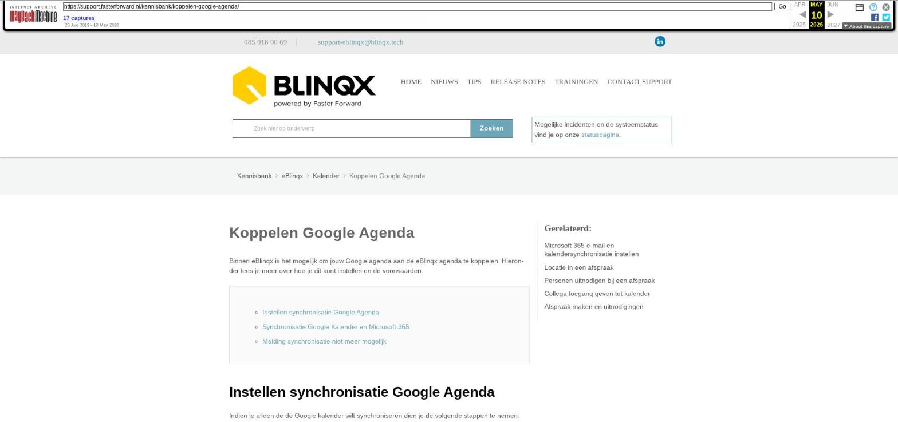

Koppelen Google Agenda

Tekstinhoud
Koppelen Google Agenda
Binnen eBlinqx is het mogelijk om jouw Google agenda aan de eBlinqx agenda te koppelen. Hieronder lees je meer over hoe je dit kunt instellen en de voorwaarden.
Instellen synchronisatie Google Agenda
Synchronisatie Google Kalender en Microsoft 365
Melding synchronisatie niet meer mogelijk
Instellen synchronisatie Google Agenda
Indien je alleen de de Google kalender wilt synchroniseren dien je de volgende stappen te nemen:
Ga naar Kalender-> klik op het hamburgermenu (liggende streepjes) en selecteer 'Instellingen'.
Klik onderin de pagina bij "Google kalender synchronisatie" op het plusicoon
Klik op "Authentificeren met Google", vervolgens wordt een pop-up van Google geopend. Indien je nog niet bent ingelogd met jouw Google account op de computer of laptop waarop je werkt, krijg je hier alsnog de mogelijkheid om dat te doen
Klik vervolgens op accepteren om eBlinqx toegang te verlenen tot de Google Agenda, de pop-up zal hierna sluiten
Wanneer het proces juist is doorlopen zal in de volgende sync. (proces van 15 minuten) jouw agenda worden geüpdatet aan beide kanten
Let op: Bovenstaande stappen gelden in het geval dat jouw omgeving reeds is ingesteld op het koppelen van de Google Agenda. Wanneer je de eerste gebruiker van jouw omgeving bent die dit in wil stellen, zullen er eerst een aantal instellingen betreffende de inrichting bij Blinqx moeten gedaan worden. Indien dit het geval is kan je deze wens kenbaar maken middels een e-mail naar support-eblinqx@blinqx.tech.
Synchronisatie Google Kalender en Microsoft 365
Het is niet mogelijk om de synchronisatie in te stellen voor zowel een Google kalender als Microsoft Office365 kalender.
Melding synchronisatie niet meer mogelijk
Wanneer je de synchronisatie van de kalender hebt ingesteld, maar het is niet meer mogelijk om de kalender te synchroniseren, bijvoorbeeld door een storing, dan wordt er een melding getoond in de kalender van eBlinqx. Deze melding geeft aan dat de kalender niet gesynchroniseerd kan worden op dit moment.
Laatste update: 15 oktober 2025
Was deze informatie nuttig?
Ja Nee